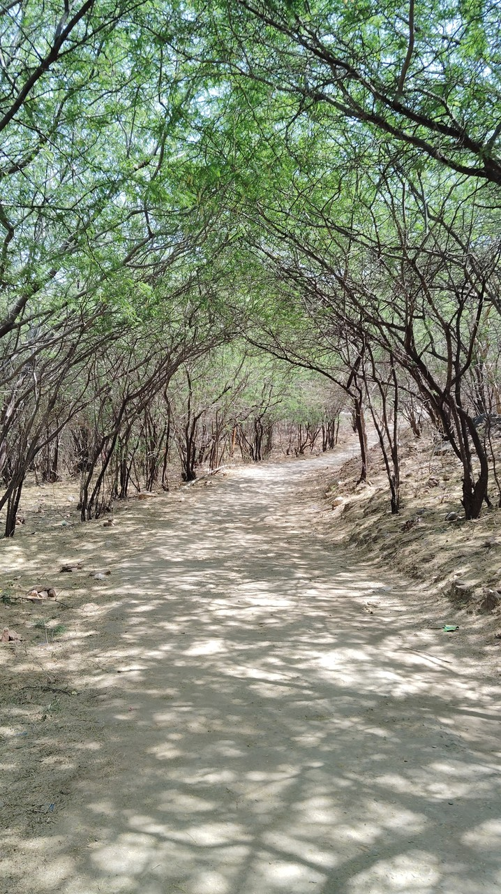
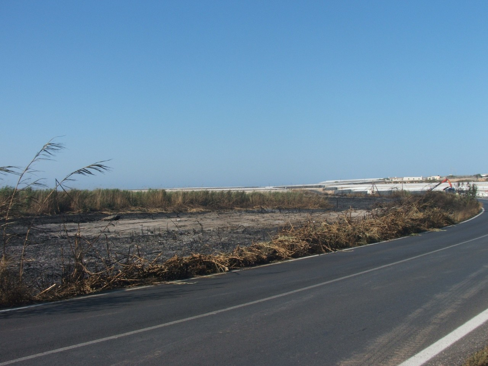
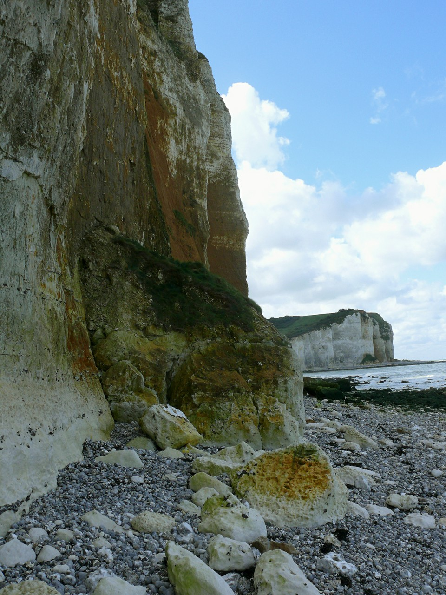
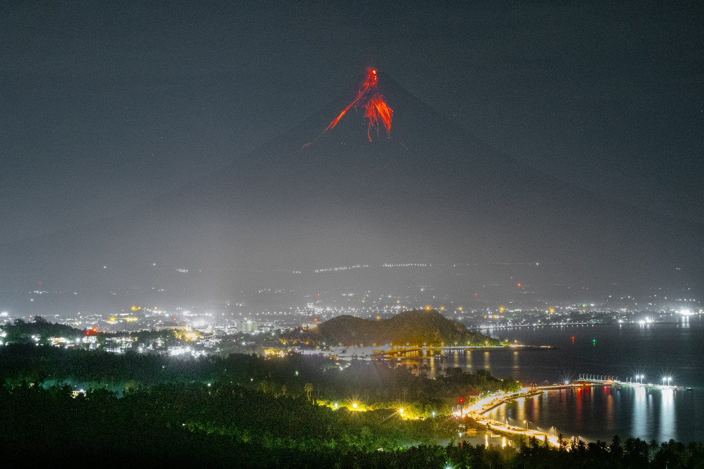
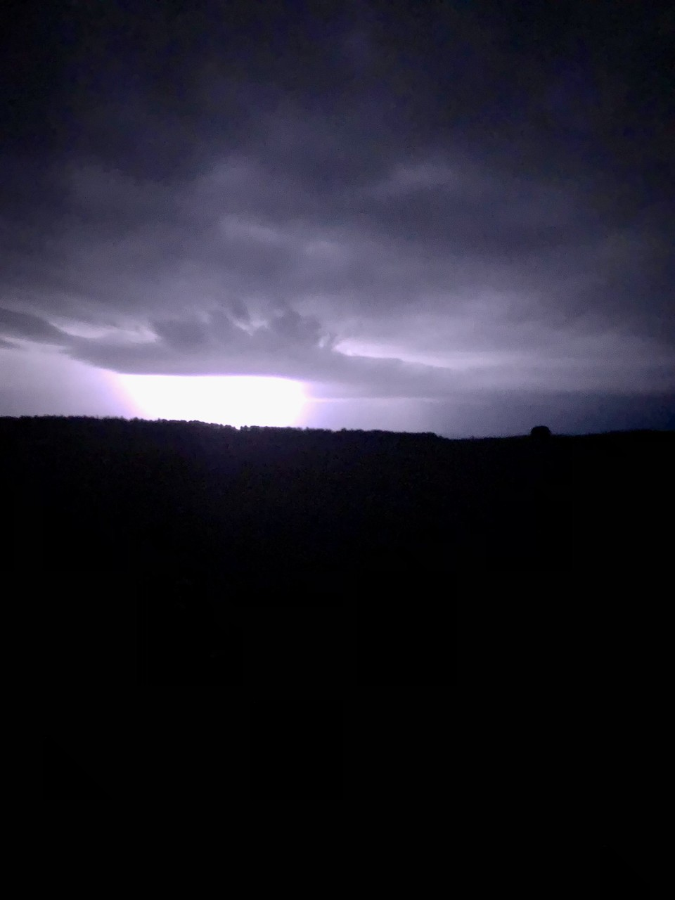

bright · 初始评价标签
全部标签均为 agent 初选的 provisional 标签。未经过真人试听或审核，不是 ground truth。此目录、答案页和来源描述不得输入推荐器。
盲版 · 完整标注 CSV
 img_0025 · Source / 来源
img_0025 · Source / 来源mismatch · 0/3
浪打栈道的冲击与危险感过强。
provisional · agent_visual_inspection + audio_author_description/source_tags; no human listening
img_0010 · Source / 来源acceptable_match · 2/3
林径有柔和日光与生命感，能够做轻松封面，但活动感较弱。
provisional · agent_visual_inspection + audio_author_description/source_tags; no human listeningimg_0033 · Source / 来源strong_match · 3/3
多只风筝悬在开阔天空，漂浮活动与留白带来轻盈感。
provisional · agent_visual_inspection + audio_author_description/source_tags; no human listening img_0026 · Source / 来源
img_0026 · Source / 来源mismatch · 0/3
急流的压迫与混浊水体不适合轻松俏皮代表曲。
provisional · agent_visual_inspection + audio_author_description/source_tags; no human listening
img_0028 · Source / 来源hard_distractor · 0/3
同样是蓝天、暖色户外和道路，焦黑火后地面及空旷状态与轻快生机相反。
provisional · agent_visual_inspection + audio_author_description/source_tags; no human listening img_0004 · Source / 来源
img_0004 · Source / 来源strong_match · 3/3
鸭妈妈与幼鸭游动，生命与轻松日常活动契合俏皮音乐。
provisional · agent_visual_inspection + audio_author_description/source_tags; no human listening img_0009 · Source / 来源
img_0009 · Source / 来源acceptable_match · 2/3
户外自然与水面可承接轻松音乐；阴云与静止倒影使它弱于明显匹配，但仍可接受。
provisional · agent_visual_inspection + audio_author_description/source_tags; no human listeningimg_0035 · Source / 来源hard_distractor · 1/3
闪亮的小水滴与花朵高光在视觉上相近，但雨窗的隔离感不如欢快户外适合。
provisional · agent_visual_inspection + audio_author_description/source_tags; no human listening img_0037 · Source / 来源
img_0037 · Source / 来源hard_distractor · 1/3
蓝天与细线条像风筝画面，裸枝静止、缺少活动与繁盛感。
provisional · agent_visual_inspection + audio_author_description/source_tags; no human listening img_0015 · Source / 来源
img_0015 · Source / 来源acceptable_match · 2/3
晴天山湖可传达积极开阔感，低动作强度使匹配弱于明显匹配组。
provisional · agent_visual_inspection + audio_author_description/source_tags; no human listening img_0005 · Source / 来源
img_0005 · Source / 来源strong_match · 3/3
蝴蝶停在黄花上，自然生机与轻微活动感契合明亮组。
provisional · agent_visual_inspection + audio_author_description/source_tags; no human listening img_0002 · Source / 来源
img_0002 · Source / 来源strong_match · 3/3
春季小花在草地开放，轻巧细节适合轻快音色。
provisional · agent_visual_inspection + audio_author_description/source_tags; no human listening
img_0011 · Source / 来源acceptable_match · 2/3
晴朗海岸适合休闲气氛，不过构图较静态。
provisional · agent_visual_inspection + audio_author_description/source_tags; no human listening img_0007 · Source / 来源
img_0007 · Source / 来源strong_match · 3/3
海滩上的多彩冲浪板暗示轻松户外娱乐；不是竞技紧张场景。
provisional · agent_visual_inspection + audio_author_description/source_tags; no human listening img_0006 · Source / 来源
img_0006 · Source / 来源strong_match · 3/3
粉白睡莲盛开，多个花朵的节律与活力契合积极气氛。
provisional · agent_visual_inspection + audio_author_description/source_tags; no human listening img_0023 · Source / 来源
img_0023 · Source / 来源hard_distractor · 1/3
蓝天和明亮建筑表面像愉快旅行照，残破立面与空街却偏失落。
provisional · agent_visual_inspection + audio_author_description/source_tags; no human listening
img_0040 · Source / 来源mismatch · 0/3
夜间喷发的威胁感与积极轻盈气氛明显不同。
provisional · agent_visual_inspection + audio_author_description/source_tags; no human listening img_0008 · Source / 来源
img_0008 · Source / 来源strong_match · 3/3
雨后城市天空出现彩虹，开放天空与转晴意味提供希望感。
provisional · agent_visual_inspection + audio_author_description/source_tags; no human listening img_0001 · Source / 来源
img_0001 · Source / 来源strong_match · 3/3
向日葵朝向开阔蓝天，植物生长与仰视构图呈现积极感。
provisional · agent_visual_inspection + audio_author_description/source_tags; no human listening
img_0027 · Source / 来源mismatch · 0/3
强雷暴的紧张情境与轻快音乐不一致。
provisional · agent_visual_inspection + audio_author_description/source_tags; no human listening